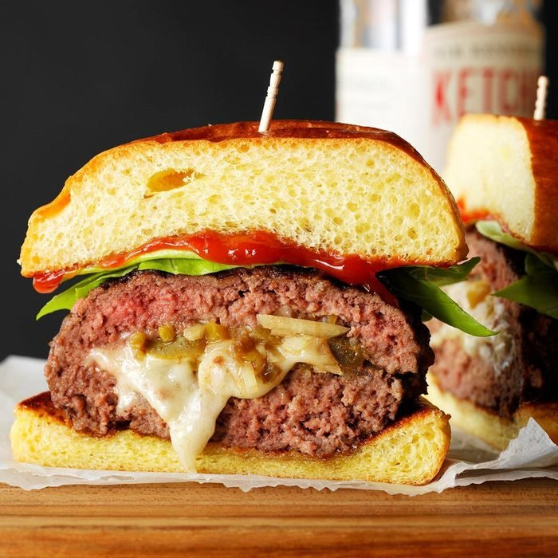

Jalapeno Swiss Burgers

Description
Mexican culture influenced burger filled with cheese and jalapenos. YUM!
Ingredients
- 2 pounds ground beef
- 4 slices Swiss cheese
- 1 small onion, finely chopped
- 2 to 3 pickled jalapeno peppers, seeded and finely chopped
- 4 hamburger buns, split and toasted
- Optional: Lettuce leaves and ketchup
Steps
- Shape beef into 8 thin patties. Top 4 patties with cheese, onion and jalapenos. Top with remaining patties; press edges firmly to seal.
- Grill, covered, over medium heat or broil 4 in. from the heat until a thermometer reads 160° and juices run clear, 8-9 minutes on each side. Serve on buns. If desired, serve with toppings.
Nutrition Facts
1 burger: 665 calories, 37g fat (16g saturated fat), 175mg cholesterol, 423mg sodium, 24g carbohydrate (5g sugars, 2g fiber), 55g protein.